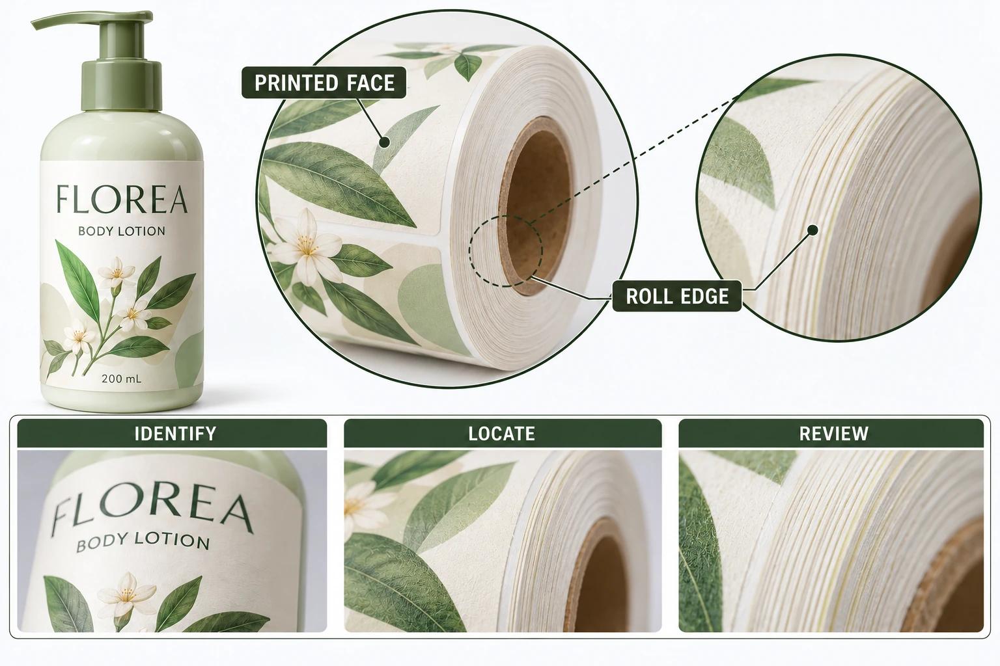

Locate the exposed material
Identify whether the observation is on a roll side, the outer layer, a label perimeter or another part of the supply. Mark the location in a context photograph and a closer view. Keep fingers, dust or improvised cleaning away from the area under review so that later examination still has a useful reference.
Describe what was seen and, if relevant, what the authorized operator observed during handling. Do not ask an untrained person to touch an unknown material or inspect a running web to obtain a more dramatic picture. Follow the receiving site's normal procedures.
Keep bottle-side edge lift separate from exposed adhesive on supplied rolls. Those observations occur at different stages and may need different evidence. A change in bottle adhesive should not be the automatic response to a supply-handling concern.
Collect the conditions without inventing a history
Record the job, artwork, material reference, roll and carton. Include receipt, opening and known repacking events. If transport or storage conditions were recorded, supply the actual record. If they were not recorded, state that gap.
Avery's heat and humidity guidance identifies heat as a possible contributor to adhesive becoming soft and appearing at label edges. It does not diagnose your roll or provide the storage limits for your custom construction.
Ask the actual supplier for the relevant finished-label instructions and review. Today's room temperature cannot establish what happened earlier in transit. Nor does a warm day prove that heat caused an observation. The storage guide explains how to keep material-specific conditions and known history connected.
Decide what must remain on hold
Have the responsible receiving team identify affected stock and obtain an instruction before using it on equipment. Do not wipe the roll edge, apply powder or add another material as an informal fix. Such actions can change the evidence and create a different supply than the one quoted.
If the supplier asks for a retained sample or a defined examination, record its identity and the authorized method. Preserve enough context to connect the sample to the original roll. A loose sticky fragment in an unmarked bag is much harder to interpret than an identifiable record.
Ask whether apparently separate units need review and how that scope will be determined. One observed roll does not establish the condition of an entire order. Equally, repeated identified observations should not disappear into a single vague photograph.
Build an edge-observation record
This is a coordination worksheet, not an acceptance threshold for adhesive exposure.
| Field | Record | Next decision |
|---|---|---|
| Supply identity | Construction, job, roll and carton | Which material is under review? |
| Location | Side, layer position and marked area | Is the concern being described consistently? |
| Observation | Visible trace and authorized handling observation | What is known without a cause claim? |
| Conditions | Actual history and explicit unknowns | Which possible explanations need investigation? |
| Extent | Identified units and unreviewed balance | How broad is the evidence? |
| Review | Supplier request and receiving-site restrictions | What can safely proceed under site rules? |
| Disposition | Agreed action, owner and replacement reference if any | How is the decision closed? |
Complete identity and location first. Collect the available conditions and extent, then ask the supplier what evidence is needed. Obtain the site's handling instruction, preserve the reference and document the eventual response separately from the first acknowledgement.
Do not release an unresolved roll merely because its artwork is correct. Do not reject every material sharing its film name merely because a roll-edge trace was observed. Both conclusions go beyond the evidence.

A correction needs its own traceable supply
A hypothetical concern limited to an identified roll can support a focused review and an agreed next action. A concern appearing across separately identified rolls may justify a wider investigation of the supplied material and history. The difference should come from the records, not assumptions about how common the problem must be.
If a replacement or corrected supply is agreed, connect its new reference to the original concern and confirm what receiving review is required. A proposed remedy is not automatically a free reprint, refund or admission of cause. Refer to the actual order terms and the supplier's confirmed response.
Use the quality-issue evidence guide for the broader handoff. For a cosmetic label inquiry, provide the order reference, construction, observed location and matched photographs. The form prepares a message; attach records separately by email or WhatsApp. Give the supplier an identifiable observation before asking for a material change.